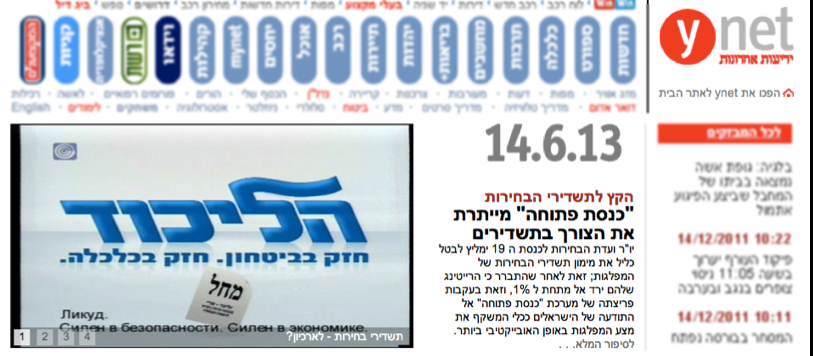

אודות
פרוייקט כנסת פתוחה (oknesset.org) נועד להנגיש את המידע אודות חברי הכנסת ותהליך החקיקה לציבור באופן פשוט, נוח ומעניין. הפרוייקט הוקם כולו על ידי מתנדבים וכיום פעילים בו כ 30 מתכנתים, מעצבים ואנשי תוכן.
הגרסה הראשונה של האפליקציה "כנסת פתוחה" לאייפון ולאנדרואיד הושקה בנובמבר 2011, והיא ניתנת להורדה מהחנות הרלוונטית (ראו קישור בחלקו העליון של העמוד).
נכון להיום, הורידו את האפליקציה כ 3000 משתמשים, ועושים בה שימוש מדי יום כ 50 אנשים. האפליקציה בגרסה הראשונה היא חדשנית בכך שהיא מציגה את תמונות כל חברי הכנסת, מיקומם במפלגה ומידע נוסף וזאת בצורה ידידותית. החזון הוא שהאפליקציית "כנסת פתוחה", יחד עם אתר "כנסת פתוחה", יהוו מקור בר סמכא לפעילות חברי הכנסת;
אזרחים יסתמכו על "כנסת פתוחה" על מנת לקבל החלטה למי להצביע בבחירות:
תוכן הפרוייקט כנסת פתוחה v2.0
הוספת יכולות לגרסה הנוכחית של האפליקציה. רשימה חלקית מאד של תוספות לאפליקציה כולל:
- הצגת לו"ז ועדות הכנסת
- הצגת התורמים לכל מפלגה וח"כ
- הוספת קטעי וידאו ועיתונות רלוונטיים
- הצגת פרוטוקולים של ועדות הכנסת והמליאה.
טכנולוגיה
האפליקציה כנסת נכתבה בטכנולגיה המתקדמת ביותר כיום בתחום המובייל: cross platform, אשר בביקוש הולך וגובר בקרב חברות הייטק בארץ ובעולם.
הכוונה ב cross platform היא שהאפליקציה היא אמנם Native, כלומר היא ניתנת להורדה מהחנויות של אפל ואנדרואיד. אולם, למעשה כתובה ב javascript, בארכיטקטורה של sencha touch, וארוזה על ידי PhoneGap. הסיבה לכתיבת האפליקציה בטכנולוגיית javascript היא התאמה לפלטפורמות מרובות. הקוד של "כנסת פתוחה" מתאים גם לאנדרואיד וגם לאייפון, ולמעשה נחסכה כתיבת האפליקציה פעמיים כדי שתתאים לשתי הפלטפורמות.
הקוד של האפליקציה משוחרר כקוד פתוח (https://github.com/gardenofwine/Open-Knesset-Mobile). ניתן להוריד את האפליקציה ותוך 2 דקות להריץ את גרסת הבדיקה על דפדפן כרום.
להלן דיאגרמה אודות הטכנולוגיות בהם נעשה שימוש באפליקצייה כנסת פתוחה
דרישות מהסטודנטיות
- ידע בתכנות
- יכולת ללמוד שפות חדשות (javascript) באופן עצמאי
- מחשב פיתוח
- יתרון - גישה למכשיר אנדרואיד או מחשב מקינטוש ואייפון (יכול להיות גם אייפוד או אייפד)
חומר הלימוד שיילמד במהלך הפרוייקט
- עבודה עם כלי בקרת התצורה github
- לימוד תכנות javascript עם sencha touch וארכיטקטורת MVC
- מעבר על טכנולוגיית PhoneGap, ותכנות Objective-C לאייפון ו Java לאנדרואיד במקרה הצורך.
הנחיה
מנחה הפרוייקטים יהיה בני וינגרטן, בוגר מדעי המחשב באוניברסיטה הפתוחה ובעל 12 שנות ניסיון בתעשיית ההייטק בארץ ובחו"ל כתוכניתן וראש צוות. בני יזם, תכנן וכתב את האפליקציה "כנסת פתוחה" לאייפון ולאנדרואיד במהלך קיץ 2011, וממשיך היום לפתח אותה יחד עם עוד מתנדבים. יחד הם מקדמים את השקיפות הציבורית בישראל. לפרטים: gardenofwine@gmail.com 0524-798812